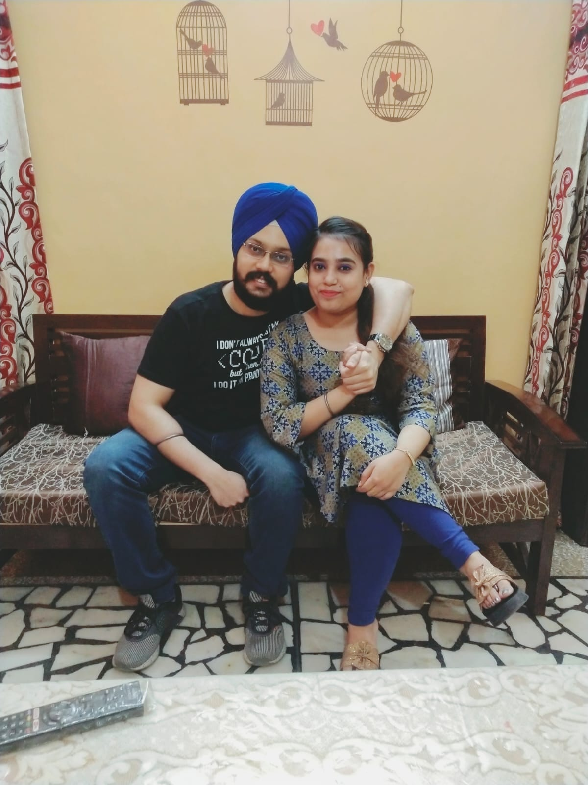
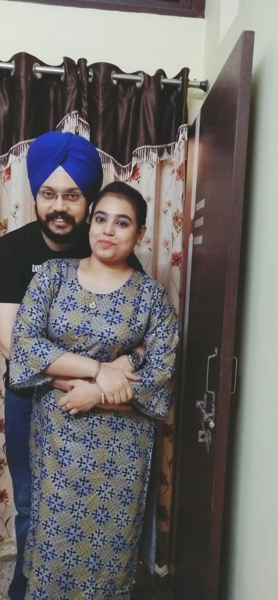

November 2020
-


The search for the perfect partner started after the Covid lockdown lifted. Despite both of us being active on Shaadi.com, we still registered at Guru Ramdas Marriage Bureau, Rajouri Garden Gurudwara. Nothing could be better than finding a life-partner directly from a Guru Ghar. On 15th November, father's discussed the Rishta and the families decided to see each other on 21st November.
-

The families met at Santpura Gurudwara Sahib where both of us got a chance to talk to each other. We exchanged thoughts about life, kind of marriage, religious perspective, professional and personal life. With the thought of meeting again, both the families left for their respective homes.
December 2020
-
😠ROKAFIED !! ğŸ˜
We and our families finally got convinced that we'll be spending rest of our lives together and fixed the date for the Ardas. The families met at Ashok Nagar Gurudwara for the ceremony. This important day marked the start of the new life-long journey.


-
While we started chatting a week before our Roka ceremony to understand each other better, we got more comfortable and involved after Roka. We exchanged a lot of photos and memories from our past life. Since the beginning, we used to think in the same direction and often, completed each other's sentences.
We decided to meet for the first time after Roka on the very first weekend. We went to Gurudwara Bangla Sahib to seek his blessings first
🙠and then visited a fancy cafe [Cafe Lazeez Affairè] which we might never go again😆 .Sonia also got a few gifts for me.


-
Next week, we decided to meet during evening time for a bike ride but the traffic at Tilak Nagar flyover very much killed the mood
🤪 . We had some nice momos at Jail road and had some more snacks at Kwality Dhaba. Mummy ji always ensured Coffee when I dropped Sonia back home.

The next week we had a lunch at Imli, Vishal Enclave (thinking Jail road branch is too near to my home
😋 ). We noticed some pauses in our conversation and realized that both of us have quite less to talk sometimes😅 . #SilentLovers
January 2021
-
The meetings continued every week and the bond grew stronger, not only by meeting but by talking daily. Both of us were quite expressive and comfortable in written communication (though frequently asking "Samaj aaya?
😆 " in between), and talked on phone calls much less frequently. Thanks to lockdown schedule, that we got a lot of free time by saving travel time. On the first weekend, Sonia came to her future home for the first time😠. I was wearing a track suit which I barely changed during this winters😛 .

@ The Burger Club (pardon the dastaar), Rajouri Garden

@ McDonald's, Tilak Nagar
@ Tikka Junction (Jail road) - One of my most favorite photos till date
🥰 🥰
@ New Kadimi Restaurant (JanakPuri) - Hats off to their versatile menu
🤘 
February 2021
-
February is the month of lovers
🥰 , which also became a very special month for us. Knowing little about each other, we both spent some time in figuring out, what gift we should give to each other on Valentine's day. This was even difficult for a boring guy like me, but Komal helped me to choose a few good things (like photo-frame with heart-shaped photos).After our first meeting in February, we came back home and got this special photo clicked by our Mummy ji
😇 .Meeting point: @ Sandoz, Rajouri Garden
After getting no reservation for a good Buffet restaurant, we decided to have a lunch at Tikka Junction (which was almost empty
😠). There were a few special moments at Sonia's house of giving/taking gifts and Rose (which were little embarrassing infront of Mummy ji and Naman, and given our level of comfort).Notice the shyness in hand-holding

Kya karwa rahe ho shareef bachho se??
🤠😋 After having lunch @ Tikka Junction, Jail road
Ok, time for some gifts
🎁🛍️ 


This was a super-special meeting and a turning point for our relationship
😘 . We held hands for the first time while driving which caused love in our bond to get intensified by a huge magnitude.💘 . We really started missing each other alot, after this meeting.@ Shree Rathnam, Paschim Vihar - Another empty place
This was a suddenly planned meeting. We were first planning for Saturday evening, but Sonia got an interview call because of which she took leave from school and interview got over very early. We planned to spend a decent time together. Since Rathnam meeting, we started travelling a little far as we were bored of west delhi area and wanted to explore more in our car. So we planned to visit a Gurudwara and have some lunch (I still remember that 2km long traffic on Dhaula Kuan stretch
😢 )@ Moti Bagh Gurudwara
@ QDs, Satya Niketan (don't try that mango drink again)
😨
March 2021
-
We started planning longer meetings, to farther places, in order to spend maximum time together on that one day of the week
😠.On the first weekend of March, we planned to visit Smaash Gurgaon, for some virtual gaming fun, but unfortunately all branches of Smaash closed due to lockdown. We were now left with a few options - photography, exploring the place and eating. Earlier we thought that it might be hard to pass time, but as we couldn't feel the time passing as we were together🥰. I was wearing this special shirt gifted by my Sonia
💓 .@ Italino, CyberHub. When we had the Pasta there, I thought either someeone should teach their chef to make a good red sauce Pasta or we should stop eating at authentic restaurants. We chose the latter
😛 .@ Punjab Grill, CyberHub. We were almost full and could just manage to eat snacks (that too, not full). Pyaar dekh rahe ho photo me?

The CyberHub branded wall
😊 Another random street of CyberHub
😊 
All the needed electronics were installed at my place a day ago, so we spent an hour resting in our bedroom. That time is, by far, the most special time spent together with each other. We unleashed a new level of comfort
🥳
After a lot of day-time meetings, we wanted to explore some place which looks good at night. What better than Diggin then? Initially, we got a waiting period of 30-40 mins, but while we were busy clicking some photos, we got a call for our seat. Some beautiful photos from that day:

With each passing day of our conversation, and week of our meeting, we were getting more comfortable with each other in all kinds of conversations and were able to discuss literally any thing from our life.
We were planning for a nice Buffet Lunch, but BBQ Company was sounding quite boring as it is at walking distance from my place. So we planned an À la carte lunch at Pinch of Spice. The place was almost empty with a superb ambience and we could sneak out time for some fun
😠. We had a full course meal, starting from the soup, till the maincourse (for the first time). The food was quite tasty and as per our expectations.Another lovely photo, @ Pinch of Spice, Rajouri Garden

The bond of our love is clearly visible
😠A little rough-tough, yet charming photo (Edited)
😠Nothing feels better than her hand on me
😘 
This was ofcourse one of our special meetings due to various reasons. And the most importan reasons was that we both did twinning and wore exactly same shirts, specially bought online. Travelling to Gurgaon all the way in the evening, doing path together, listening to songs, holding hands were some of the golden moments that are unforgettable. Strolling there, we got some amazing clicks, some awesome selfies, we had delicious food sitting next to each other at Sandhouse Cafe, sneaking chances to cuddle each other. And took some pictures there as well. That was a perfect date! While coming back we had a set of some memorable moments together. This meeting however holds a very special place in our hearts and our personal memoir ofcourse!
Some clicks while strolling @ 32nd Avenue, Gurgaon
Some beautiful clicks @ Sandhouse cafe (now our mandatory poses)
April 2021
-
So, I was invited by Gagan to his house, and after alot of procrastination, I decided to go. (He planned some nice things for us). We had lunch together with Family and because we overate that day, we walked for a bit.. played
🯠and I however became expert in that after a few attempts.🤣 Not to forget, Gagan sneaking chances to give few pecks!💋 . We somehow went to our room and spent some quality time with pure intimate moments best of which was the tightest hug that we shared with each other and felt like blended in each other. We had some amazing songs as background, which we hardly heard🙈🤣 . This is one meeting very close to both of our hearts and Will be remembered even after we will get married! Very pure, yet deeply intimate.❤️ And that made us go crazily in love with each other!💗💕ğŸ’â™¥ï¸ Our first bedroom photo @ First floor
♥️
A full photo at our home. This day had a lot of mental memories and less of good photos
😜 -
Oh, what to say about this date. Me riding scooty and having Gagan sitting behind me that too so confidently and his trust on me is something I always cherish.
💋❤️ I was excited for this ride since a week, and when it finally happened it was one of the best and the most unique meeting of us.💕 We rode to fateh nagar gurdwara sahib first, after seeking blessings , we went to have scrumptious food from Cafe canteen. The place was almost Empty, we occupied a bench and sat together. Out of ritual, we clicked some beautiful selfies and got few full pictures clicked. Coming back, we took comparably longer route and empty roads with winds blowing, it was an amazing ride with some pure back hugs from my man!💗👨‍❤️‍👨 . And after reaching home , we had ice-cream together, and bid my most favourite person goodbye for another one week!❤️💋 Is there a reason to post only few photos? No, so here are five!
-
So the day is not very normal when she invites you to her place to spend an entire evening
😠. God also helped in making this extra special by introducing aandhi-toofan just an hour before I had to leave for Sonia's place. First, we planned for a Saturday evening, but because Covid and weekend lockdown (which then got extended to 2 more weeks😠), we pre-poned the plan and I reached her home 5 minutes before the expected time😛 . After a heavy dose of snacks, we went for a walk on her roof, where the most romantic rain was sprinkling on us. We held hands, bumped into each other delibrately🤪 and talked for sometime before we realized that we were getting wet due to rain. We then went to the 2nd floor, had some coffee, got back to roof and came back to a room on the 2nd floor. We relaxed for sometime and exchanged some super tight hugs. We also had some most special, intimate & deepest moments, worth cherishing till the next time we meet. Both of us internally knew that we won't be meeting too soon after this meeting (Because: FUCK YOU COVID🖕 ). I also played harmonium in this room (some random Hindi/Punjabi songs), and again had some good moments before getting back to dinner. I was super full after the dinner and could sense food till my throat (before I took some dakaars). Then I went back to my home. Some of the bestest moment with my besteeeeeeesttttt person:

-
The lovers got sad when they don't get a chance to meet. But kya kare? Health bhi toh important hai. Whatever scam this COVID is, we need to respect the lockdown guidelines to ensure safely, for not only us but our parents who are more prone
😠(yeah, favorite emoji to show how smart we are).So when there are no weekly dates, everyday is a date - Gagandeep Singh
😝😝 Finally, the first weekend passed without meeting each other in person. The first one since 6th December 2020. Initially, we thought there is no point in stopping these meetings till the month of September, or unless something major arises (and here it is
😷 ). We were so much fond of seeing each other, being with each other and feeling the presence that it felt very difficult at first. But at the end, you have to bear it (right?). When you see the world outside bearing thousand other problems, and facing irreversible situations, this is nothing in front of them🙌 . I know the little fever🥴 which you are having is because of me, but let's try to bear this time🙈 .Emotional story aside
😇 , so here are some great moments from the week:
Here's a beautiful transition with an even beautiful message
🥰 
So an arranged couple prepared for their first valentine's, knowing very little about each other's likes, having little idea about the perfect gift (s). None had an idea, that the real valentine's starts a week later for them (Rathnam date). While valentine's works for other couples as an opportunity to get convinced for the first hug, first kiss, or first sex, they were hardly comfortable in pictures Infront of her family.
After Exactly two months and two days, their photos trick people as if they are already married. But spiritually - Yes, they are married 💏💝
Sonia surprised me with a beautiful gift: Merging our childhood photos
😘😘😘 . (My version of this below🤠)
Some Payjama shots
😜🤪 (because, who wears jeans at home?)
We also had a small video call, but hardly had something to talk during that
😠. Some selfies from the week😇 🙂😍🥰
May 2021
-
The best way to start a month is to see your BAE on the first day
😍😍😍 . Daddyji again allowed lovers to meet during an evening😇 . I reached there as usual, slightly before the expected time (6.30PM) and was served hot delicious food by Mummaji🥰 . To digest the food, we went to the roof and upstairs (you know why🤩😋🤫 ) and spent some private time. We played some songs on Harmonium, hugged tightly, and had some great moments together. Then we came back, clicked photos, had dinner and I left. Little I knew that my parents were stressed that I'm out during peak of pandemic (though I took even a face sheild as a precaution). The situation outside was really bad, but the little we knew that the next gap is going to be huge😔 . Some beautiful moments from that day:

🥰🥰 SPECIAL ATTENTION: 5th month Anniversary🥰🥰 I wanted to surprise Sonia (Is this a Surprise or Gift @Sonia?
😝😝 ) with a special message, which I spent 2-3 days writing (in small intervals, as things came to my mind). On reading, she was completely blown and speechless. This was the special message:So finally we've completed the 5th month together
❣️ . Sounds like a very long journey, no? A simple person like me (or you) had never expected to run a relationship before marriage like this (right?). But this is how it was meant to be😜 . I'm so blessed to have you babes (❤️ ), that it is impossible to express this by any means💋💋💋💋💋💋 . Mere Karam itne achhe to bilkul Nahi the jitni acchi ladki babaji ne mujhe di hai. Jitna shukaraana Kara jaaye Kam hai, Kam hai🙏🙏🙏 .
Coming to you - you are the best combination of the loveliest, cutest, charming, lively, moody, sensible, matured, religious, educated and cute puppy-faced person I've ever met💘 . I'm so excited to start the big journey with you, that I dream the same regularly😇🥰 .
Listing some less significant things, which might affect you:
1. You might think that being less expressive physically is an issue, but this has its own benefits. When you express even a little, it's rewarding for me, I feel like I've got something, I've been gifted a kiss, a hug, or something from my beloved😘😘😘
2. You sometimes get moody and later realize the same, whereas I act normal/sane almost everytime. I know that this is intermittent. I understand such swings (be it health related or normal mental swings). I call myself impatient but internally I've got a lot of patience in handling such situations. Life and relationships are much beyond such small issues (not sure if this deserve to be called even an *issue*). Also, I wrote before also: *My ego is of much lower magnitude than the depth of our relation*. What we need to always preserve for each other is *self-respect*.
Now the things that matter:
1.💗💗💗 I LOVE YOU💗💗💗 . Saying this is important - regularly, repeatedly, verbally, face-to-face, everytime and everywhere.
2. A day without doing deep talks with you / praising you / sharing a lyrics card with you is a *day wasted*. A day is probably a bigger unit of time. I want to talk every hour, minute and second but din mei kaam karna, nahana, sona, hagna bhi zaruri hai😠, so this is clichèd. I want to talk to you more and more, beshak baat karne k liye🔔 ho.
3. When we are in private and we open the 🎹, I'm already so much lost in you and in the moment, that I hardly remember songs to play. I've never felt that lost anytime, anywhere else😵 .
4. As I've noticed more recently, you are becoming more open with me in the things we talk, and questions we ask. So the comfort is slowing coming-in and I'm loving it completely.
On this 5th month anniversary, I feel I've made the right choice, and filled my life with real happiness. Always remember, that I want to have a comfortable life with you and I regularly check for your comfort in anything I do (even when you don't speak up). But given the fact that I'm also a human, you might need to tell me a few things when you're not seeing things upto-the-mark, or when you feel that my feedback system isn't working well. Basically, mereko bhi tokna pad skta hai😛 and you are the only one in the world who has all the rights to do this. Not my parents, sister, or friends, this right is exclusive to you💠.
Forever yours (*atleast* in this lifetime),
Gagan (a.k.a Sonia ka aashiq💘 )
Along with this message, there were these two photos
😘😘
Again, a phase of sadness started as we heard rise in COVID cases, or news of a friend loosing a relative. Above everything, this was vacations time for Sonia and she was hell bored. We knew that it doesn't make sense to even convince our parents to let us meet because of the situation, but from inside we were DYING to meet
🥺 . I wanted Sonia to come to my place, but because of very obvious concerns, Daddyji was wanting me to come (I was shy as this was 3rd consecutive time I was going🙈 ). Daddyji followed the professional way and reached out to Papa directly, where Papa said that I'll come if Covid situation improves (as it was already improving when elders were doing the call). Matlab andar se toh mere bhi ladoo foot rahe the and it was not-so-convincing to know on a Monday, that I'll be going to see her on Sunday🥺 (6 din BC?). But I was happy that I'm getting to see her. We also had a major argument on a very very infinitesimally small thing, and I repeat, none of us should stoop that low again (in an argument)😊😇 .Some photos from the video calls we had during these three weeks (I know you hate these random photos, but you should have a few reasons to hate me too
😜 , and zada bolegi to isse bhi gandi photos h mere pass🤣 )
Whenever I'm sad that Sonia is away, I read this and realize that we have to be patient during this time, because rest of the lovely life is anyways together
😇😍🥰
So again I was invited on 23rd May, as the cases were continuously declining. And this time I reached around 5:28PM to spend more quality time with my Love. This time, as Sonia didn't go out for 40+ days, we also added a bike ride (till Rajouri Garden chownk) in our plan. As usual, I was offered some delicious food and a surprise Grilled Sandwich from Sonia
😠that was Lit AF😠. We also clicked some photos from Tripod, played with bandminton (not the regular one, but mosquito one), didn't go to the roof (because of bats🥵 ), still had plenty fun. For the private time, we stressed more on simplicity of acts rather than variety of it, and it turned out to be super awesome for us😇🥰 . I was also given a nice love letter by Sonia, which I got through a treasure hunt😋 . Apart from keeping that in the TV drawer with our other gifts, I also designed a poster version of it. Here are some super lovely photos💋💋 .
